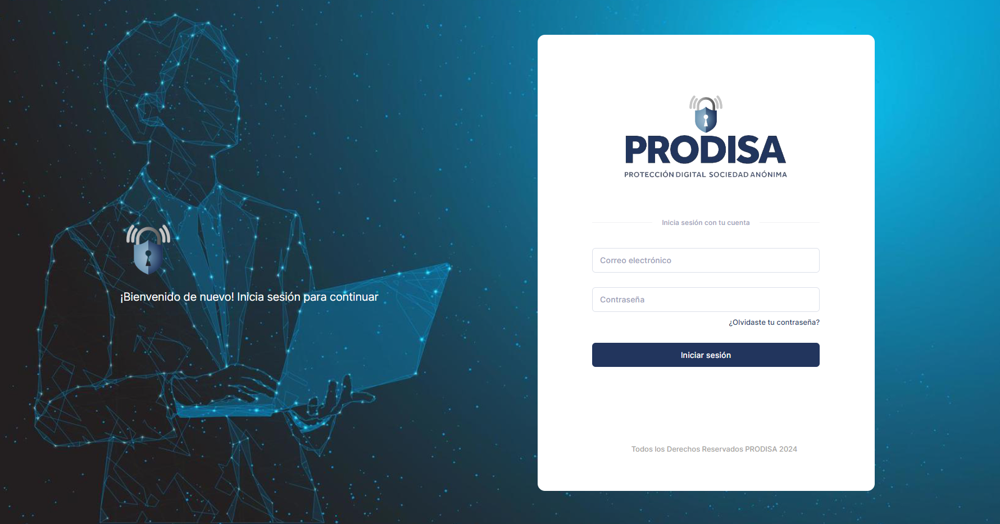

Adaptación de los logos para el proyecto
Esta semana se trabajó en una segunda versión del diseño para el módulo de Login a petición del cliente.
V6
V5

V4

V3

V2
Adaptación de los logos para el proyecto
Se realizo una mejora en los logos con Photoshop ya que no estaban adaptados a la necesidad del sistema.
El primer logo esta en 512x512
Este logo esta 492x128

FRONT END Login
Se estuvo trabajando en la parte del Front-End (Visual) del módulo y en la imagen siguiente se muestra una versión preliminar.

MÓDULO LOGIN
La semana del 05 de febrero se da inicio al primer módulo del sistema, el cual consiste en la creación del Login tanto la parte del Front-End (visual) como la parte del BackEnd (manipulación de datos).
Este módulo está compuesto por las siguientes tareas:
- Desarrollo del código Front-End en HTML, CSS.
- Incluir la línea gráfica de la institución (logos, colores, tipografías).
- Crear el recurso gráfico según las necesidades del código.
- Crear validaciones de información con JavaScript.
Configuración de la página de bienvenida en el IIS
Creación de correos institucionales
Se creó el correo en el hosting y se le configuró un espacio ilimitado para su funcionamiento. La contraseña es la misma proporcionada para los correos de Gmail al cual será vinculada la cuenta.
- lhernandez@prodisarh.com
- ysuy@prodisarh.com
- rrhh@prodisarh.com
- epinto@prodisarh.com
- pjsosa@prodisarh.com
- licbor@prodisarh.com
- licsosa@prodisarh.com
- lchen@prodisarh.com
El correo en el hosting envía una copia al correo de gmail para que este pueda ser leído por el usuario y respondido.
No obstante se guarda una copia de seguridad si en dado caso el usuario en gmail decide eliminarlo con malas intenciones.
Configuración SQL Server Base de Datos
Instalación de la Instancia SQL Server
Una instancia de SQL Server es una instalación del motor de base de datos SQL Server. Cada instancia administra varias bases de datos del sistema y una o varias bases de datos de usuario.
Configuración del IIS
Instalación del IIS
Un IIS, o Servicios de Información de Internet, es un software que actúa como un servidor web.
Configuración de la VPN en el Server
Configuración del Server
Adquisición del Server
Este servicio es de cuota mensual
Un servidor web es un ordenador de gran potencia que se encarga de “prestar el servicio” de transmitir la información pedida por sus clientes (otros ordenadores, dispositivos móviles, impresoras, personas, etc.).
- Sistema Operativo
Windows Server 2022 Standard Edition (64 bit) - Localización
WAS2 (Washington D.C Metropolitan Area, VA, USA)
Creación del correo prodisaIT@
Para la administración del server se creó un correo de soporte con el dominio de prodisarh.com
Adquisición de Hosting Premium
Este servicio se contrató para el periodo 2024 - 2026.
Permite el alojamiento de backups y recursos para el sistema, además de almacenamiento para los correos electrónicos.
El servicio premium permite la creación ilimitada de correos institucionales, toda vez no se alcance el almacenamiento máximo del mismo (50GB).
Adquisición de Certificado SSL
Este servicio se contrató para el periodo 2024 - 2026.
Un certificado SSL es un pequeño archivo de datos que vincula digitalmente una clave criptográfica con los datos de una organización. Una vez instalado en el servidor web, el certificado activa el candado y el protocolo https, habilitando una conexión segura desde el servidor web hasta el navegador.
Adquisición de DNS Premium
Este servicio se contrató para el periodo 2024 - 2026.
El DNS Premium garantiza un mayor tiempo de actividad del servicio y la mejor calidad y experiencia posibles. En comparación con un servicio DNS más básico, Premium DNS garantiza un rendimiento más rápido, máxima disponibilidad del sitio y mejor seguridad.
Adquisición de Dominio
Se realizó la adquisición del dominio prodisarh.com para los próximos 2 años, lo cual asegura que el servicio estará en funcionamiento aún después de finalizar el contrato de los 18 meses.